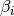
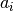
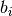
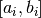
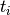
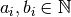
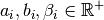
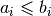
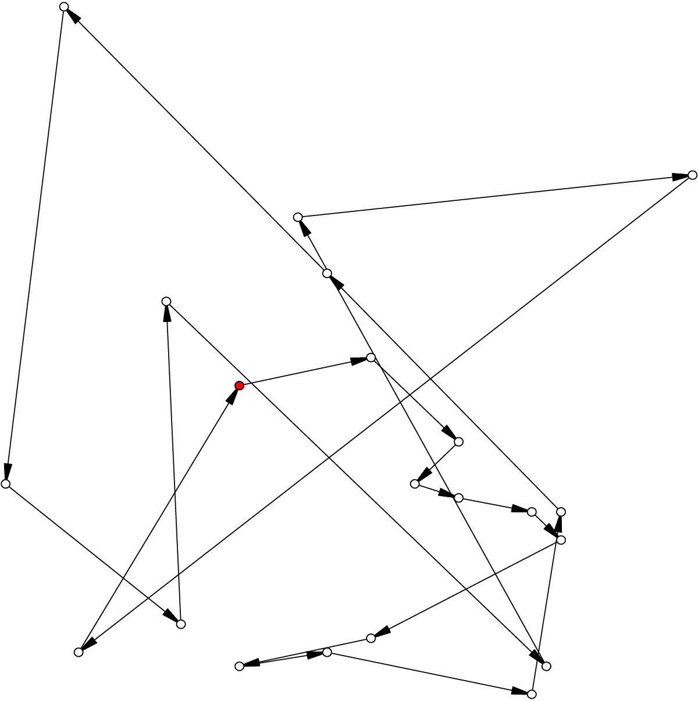

9.8. The Travelling Salesman Problem with Time Windows (TSPTW)
The Travelling Salesman Problem with Time Windows is similar to the TSP except that cities (or clients) must be visited within a given time window. This added time constraint - although it restricts the search tree[1] - renders the problem even more difficult in practice! Indeed, the beautiful symmetry of the TSP[2] (any permutation of cities is a feasible solution) is broken and even the search for feasible solutions is difficult [Savelsbergh1985].
We present the TSPTW and two instances formats: the López-Ibáñez-Blum and the da Silva-Urrutia formats. As in the case of the TSP, we have implemented a class to read those instances: the TSPTWData class. We also use the ePix library to visualize feasible solutions using the TSPTWEpixData class.
| [1] | All TSP solutions are not TSPTW solutions! |
| [2] | Notice how the depot is important for the TSPTW while it is not for the TSP. |
| [Savelsbergh1985] | M.W.P. Savelsbergh. Local search in routing problems with time windows, Annals of Operations Research 4, 285–305, 1985. |
9.8.1. The Travelling Salesman Problem with Time Windows
You might be surprised to learn that there is no common definition that is widely accepted within the scientific community. The basic idea is to find a “tour” that visits each node within a time window but several variants exist.
We will use the definition given in Rodrigo Ferreira da Silva and Sebastián Urrutia’s 2010 article [Ferreira2010]. Instead of visiting cities as in the TSP, we visit and service customers.
| [Ferreira2010] | R. Ferreira da Silva and S. Urrutia. A General VNS heuristic for the traveling salesman problem with time windows, Discrete Optimization, V.7, Issue 4, pp. 203-211, 2010. |
The Travelling Salesman Problem with Time Windows (TSPTW) consists in finding a minimum cost tour starting and ending
at a given depot and visiting all customers. Each customer  has:
has:
- a service time : this is the time needed to service the customer;
- a ready time  (sometimes called release time): you cannot start to serve the customer before her ready time and
- a due time  (sometimes called deadline): you must serve the client before her due time.
You only can (and must) visit each client once. The costs on the arcs represent the travel times (and sometimes also the
service times). The total cost of a tour is the sum of the costs on the arcs
used in the
tour. The ready and due times of a client define a time window  within which the client has
to be served. You are allowed to visit the client before the ready time but you’ll have to wait until
the ready time before you can service her. Due times must be respected and tours that fail to serve clients before their
due time are considered infeasible.
Let’s illustrate a visit to a client . To do so, let’s define:
- the arrival time : the time you arrive at the client and
- the service start time
 : the time you start to service the client.
: the time you start to service the client.
In real application, the time spent at a client might be limited to the service. For instance, you might wait in front of the client’s office. It’s common to consider that you start to service and leave as soon as possible and this is our assumption in this chapter
Some authors ([Dash2010] for instance) assign two costs on the edges: a travel cost and a travel time. While the travel times must respect the time windows constraints, the objective value is the sum of the travel costs on the edges. In this chapter, we only have one cost on the edges. The objective value and the real travel time are different: you might have to wait before servicing a client.
| [Dash2010] | S. Dash, O. Günlük, A. Lodi, and A. Tramontani. A Time Bucket Formulation for the Traveling Salesman Problem with Time Windows, INFORMS Journal on Computing, v24, pp 132-147, 2012 (published online before print on December 29, 2010). |
Often, some conditions are applied to the time windows (in theory or practice). The only condition[3] we will impose is that , i.e. we impose that the bounds of the time windows must be non negative integers. This also implies that the time windows and the servicing times are finite.
| [3] | This condition doesn’t hold in Rodrigo Ferreira da Silva and Sebastián Urrutia’s definition of a TSPTW. In their article, they ask for (at least theoretically) , i.e. non negative real numbers and . |
The practical difficulty of the TSPTW is such that only instances with about 100 nodes have been solved to optimality[4] and heuristics rarely challenge instances with more than 400 nodes.
| [4] | Instances with more than 100 nodes have been solved to optimality but no one - at least to the best of our knowledge at the time of writing - can systematically solve to optimality instances with more than 40 nodes... |
The difficulty of the problem not only depends on the number of nodes but also on the “quality” of the time windows. Not many attempts can be found in the scientific literature about exact or heuristic algorithms using CP to solve the TSPTW. Actually, not so many attempts have been successful in solving this difficult problem in general. The scientific literature on this problem is hence scarce.
We refer the interested reader to the two web pages cited in the next sub-section for some relevant literature.
9.8.2. Benchmark data
There isn’t a real standard. Basically, you’ll find two types of formats and their variants. We refer you to two web pages because their respective authors took great care in formatting all the instances uniformly.
Manuel López-Ibáñez and Christian Blum have collected benchmark instances from different sources in the literature. Their Benchmark Instances for the TSPTW page contains about 300 instances.
Rodrigo Ferreira da Silva and Sebastián Urrutia also collected benchmark from different sources in the literature. Their The TSPTW - Approaches & Additional Resources page contains about 100 instances.
Both pages provide best solutions and sum up the relevant literature.
9.8.2.1. The López-Ibáñez-Blum format
We present the same instance proposed by Dumas et al. [Dumas1995] in both formats.
| [Dumas1995] | Dumas, Y., Desrosiers, J., Gelinas, E., Solomon, M., An optimal algorithm for the travelling salesman problem with time windows, Operations Research 43 (2) (1995) 367-371. |
Here is the content of the file n20w20.001.txt (LIB_n20w20.001.txt in our directory /tutorials/cplusplus/chap9/):
21
0 19 17 34 7 20 10 17 28 15 23 29 23 29 21 20 9 16 21 13 12
19 0 10 41 26 3 27 25 15 17 17 14 18 48 17 6 21 14 17 13 31
17 10 0 47 23 13 26 15 25 22 26 24 27 44 7 5 23 21 25 18 29
34 41 47 0 36 39 25 51 36 24 27 38 25 44 54 45 25 28 26 28 27
7 26 23 36 0 27 11 17 35 22 30 36 30 22 25 26 14 23 28 20 10
20 3 13 39 27 0 26 27 12 15 14 11 15 49 20 9 20 11 14 11 30
10 27 26 25 11 26 0 26 31 14 23 32 22 25 31 28 6 17 21 15 4
17 25 15 51 17 27 26 0 39 31 38 38 38 34 13 20 26 31 36 28 27
28 15 25 36 35 12 31 39 0 17 9 2 11 56 32 21 24 13 11 15 35
15 17 22 24 22 15 14 31 17 0 9 18 8 39 29 21 8 4 7 4 18
23 17 26 27 30 14 23 38 9 9 0 11 2 48 33 23 17 7 2 10 27
29 14 24 38 36 11 32 38 2 18 11 0 13 57 31 20 25 14 13 17 36
23 18 27 25 30 15 22 38 11 8 2 13 0 47 34 24 16 7 2 10 26
29 48 44 44 22 49 25 34 56 39 48 57 47 0 46 48 31 42 46 40 21
21 17 7 54 25 20 31 13 32 29 33 31 34 46 0 11 29 28 32 25 33
20 6 5 45 26 9 28 20 21 21 23 20 24 48 11 0 23 19 22 17 32
9 21 23 25 14 20 6 26 24 8 17 25 16 31 29 23 0 11 15 9 10
16 14 21 28 23 11 17 31 13 4 7 14 7 42 28 19 11 0 5 3 21
21 17 25 26 28 14 21 36 11 7 2 13 2 46 32 22 15 5 0 8 25
13 13 18 28 20 11 15 28 15 4 10 17 10 40 25 17 9 3 8 0 19
12 31 29 27 10 30 4 27 35 18 27 36 26 21 33 32 10 21 25 19 0
0 408
62 68
181 205
306 324
214 217
51 61
102 129
175 186
250 263
3 23
21 49
79 90
78 96
140 154
354 386
42 63
2 13
24 42
20 33
9 21
275 300
The first line contains the number of nodes, including the depot. The n20w20.001 instance has a depot and 20 nodes.
The following 21 lines represent the distance matrix. This distance typically represents the
travel time between nodes and  , plus the service time at node .
The distance matrix is not necessarily symmetrical. The last 21 lines represent the time windows (earliest, latest)
for each node, one per line. The first node is the depot.
, plus the service time at node .
The distance matrix is not necessarily symmetrical. The last 21 lines represent the time windows (earliest, latest)
for each node, one per line. The first node is the depot.
When then sum of service times is not 0, it is specified in a comment on the last line:
# Sum of service times: 522
9.8.2.2. The da Silva-Urrutia format
We present exactly the same instance as above. Here is the file n20w20.001.txt (DSU_n20w20.001.txt in our directory /tutorials/cplusplus/chap9/):
!! n20w20.001 16.75 391
CUST NO. XCOORD. YCOORD. DEMAND [READY TIME] [DUE DATE] [SERVICE TIME]
1 16.00 23.00 0.00 0.00 408.00 0.00
2 22.00 4.00 0.00 62.00 68.00 0.00
3 12.00 6.00 0.00 181.00 205.00 0.00
4 47.00 38.00 0.00 306.00 324.00 0.00
5 11.00 29.00 0.00 214.00 217.00 0.00
6 25.00 5.00 0.00 51.00 61.00 0.00
7 22.00 31.00 0.00 102.00 129.00 0.00
8 0.00 16.00 0.00 175.00 186.00 0.00
9 37.00 3.00 0.00 250.00 263.00 0.00
10 31.00 19.00 0.00 3.00 23.00 0.00
11 38.00 12.00 0.00 21.00 49.00 0.00
12 36.00 1.00 0.00 79.00 90.00 0.00
13 38.00 14.00 0.00 78.00 96.00 0.00
14 4.00 50.00 0.00 140.00 154.00 0.00
15 5.00 4.00 0.00 354.00 386.00 0.00
16 16.00 3.00 0.00 42.00 63.00 0.00
17 25.00 25.00 0.00 2.00 13.00 0.00
18 31.00 15.00 0.00 24.00 42.00 0.00
19 36.00 14.00 0.00 20.00 33.00 0.00
20 28.00 16.00 0.00 9.00 21.00 0.00
21 20.00 35.00 0.00 275.00 300.00 0.00
999 0.00 0.00 0.00 0.00 0.00 0.00
Having seen the same instance, you don’t need much complementary info to understand this format. The first line of data (CUST NO. 1) represents the depot and the last line marks the end of the file. As you can see, the authors are not really optimistic about solving instances with more than 999 nodes! We don’t use the DEMAND column and we round down the numbers of the last three columns.
You might think that the translation from this second format to the first one is obvious. It is not! See the remark on Travel-time Computation on the Jeffrey Ohlmann and Barrett Thomas benchmark page. In the code, we don’t try to match the data between the two formats, so you might encounter different solutions.
Warning
The same instances in the da Silva-Urrutia and the López-Ibáñez-Blum formats might be slightly different.
9.8.2.3. Solutions
We use a simple format to record feasible solutions:
- a first line with a permutation of the nodes;
- a second line with the objective value.
For our instance, here is an example of a feasible solution:
1 17 10 20 18 19 11 6 16 2 12 13 7 14 8 3 5 9 21 4 15
378
The objective value 378 is the sum of the costs of the arcs and not the time spent to travel (which is 387 in this case).
A basic program check_tsptw_solutions.cc verifies if a given solution is indeed feasible for a given instance in López-Ibáñez-Blum or da Silva-Urrutia formats:
./check_tsptw_solutions -tsptw_data_file=DSU_n20w20.001.txt
-tsptw_solution_file=n20w20.001.sol
This program checks if all the nodes have been serviced and if the solution is feasible:
bool IsFeasibleSolution() {
...
// for loop to test each node in the tour
for (...) {
// Test if we have to wait at client node
waiting_time = ReadyTime(node) - total_time;
if (waiting_time > 0) {
total_time = ReadyTime(node);
}
if (total_time + ServiceTime(node) > DueTime(node)) {
return false;
}
}
...
return true;
}
IsFeasibleSolution() returns true if the submitted solution is feasible and false otherwise. To test this solution, we construct the tour node by node. Arriving at a node node at time total_time in the for loop, we test two things:
First, if we have to wait. We compute the waiting time waiting_time: ReadyTime(node) returns the ready time of the node node and total_time is the total time spent in the tour to reach the node node. If the ready time is greater than total_time, waiting_time > 0 is true and we set total_time to ReadyTime(node).
Second, if the due times are respected, i.e.:
is total_time + ServiceTime(node)
 DueTime(node) true?
DueTime(node) true?If not, the method returns false. If all the due times are respected, the method returns true.
The output of the above command line is:
TSPTW instance of type da Silva-Urrutia format
Solution is feasible!
Loaded obj value: 378, Computed obj value: 387
Total computed travel time: 391
TSPTW file DSU_n20w20.001.txt (n=21, min=2, max=59, sym? yes)
(!! n20w20.001 16.75 391 )
As you can see, the recorded objective value in the solution file is 378 while the value of the computed objective value is 387. This is because the distance matrix computed is different from the actual one really used to compute the objective value of the solution. We refer again the reader to the remark on Travel-time Computation from Jeffrey Ohlmann and Barrett Thomas cited above. If you use the right distance matrix as in the López-Ibáñez-Blum format, you get:
TSPTW instance of type López-Ibáñez-Blum format
Solution is feasible!
Loaded obj value: 378, Computed obj value: 378
Total computed travel time: 387
TSPTW file LIB_n20w20.001.txt (n=21, min=2, max=57, sym? yes)
Now both the given objective value and the computed one are equal. Note that the total travel time is a bit longer: 387 for a total distance of 378.
9.8.3. The TSPTWData class
You’ll find the code in the file tsptw.h.
The TSPTWData class is modelled on the TSPData class. As in the case of the TSPLIB, we number the nodes starting from one.
9.8.3.1. To read instance files
To read TSPTW instance files, the TSPTWData class offers the
LoadTSPTWFile(const std::string& filename);
method. It parses a file in López-Ibáñez-Blum or da Silva-Urrutia format and - in the second case - loads the coordinates and the service times for further treatment. Note that the instance’s format is only partially checked: bad inputs might cause undefined behaviour.
To test if the instance was successfully loaded, use:
bool IsInstanceLoaded() const;
Several specialized getters are available:
- std::string Name() const: returns the instance name, here the filename of the instance;
- std::string InstanceDetails() const: returns a short description of the instance;
- int Size() const: returns the size of the instance;
- int64 Horizon() const: returns the horizon of the instance, i.e. the maximal due time;
- int64 Distance(RoutingModel::NodeIndex from, RoutingModel::NodeIndex to) const: returns the distance between the two NodeIndexes;
- RoutingModel::NodeIndex Depot() const: returns the depot. This the first node given in the instance and solutions files.
- int64 ReadyTime(RoutingModel::NodeIndex i) const: returns the ready time of node i;
- int64 DueTime(RoutingModel::NodeIndex i) const: returns the due time of node i
- int64 ServiceTime(RoutingModel::NodeIndex i) const: returns the service time of node i.
The ServiceTime() method only makes sense when an instance is given in the da Silva-Urrutia format. In the López-Ibáñez-Blum format, the service times are added to the arc costs in the “distance” matrix and the ServiceTime() method returns 0.
To model the time windows in the RT, we use Dimensions, i.e. quantities that are accumulated along the routes at each node. At a given node to, the accumulated time is the travel cost of the arc (from, to) plus the time to service the node to. The TSPTWData class has a special method to return this quantity:
int64 CumulTime(RoutingModel::NodeIndex from,
RoutingModel::NodeIndex to) const {
return Distance(from, to) + ServiceTime(from);
}
9.8.3.2. To read solution files
To read solution files, use the
void LoadTSPTWSolutionFile(const std::string& filename);
method. This way, you can load solution files and test them with the bool IsFeasibleSolution() method briefly seen above. Actually, you should enquire if the solution is feasible before doing anything with it.
Three methods help you deal with the existence/feasibility of the solution:
bool IsSolutionLoaded() const;
bool IsSolution() const;
bool IsFeasibleSolution() const;
With IsSolutionLoaded() you can check that indeed a solution was loaded/read from a file. IsSolution() tests if the solution contains once and only once all the nodes of the graph while IsFeasibleSolution() tests if the loaded solution is feasible, i.e. if all due times are respected.
Once you are sure that a solution is valid and feasible, you can query the loaded solution:
- int64 SolutionComputedTotalTravelTime() const: computes the total travel time and returns it. The travel total time often differs from the objective value because of waiting times;
- int64 SolutionComputedObjective() const: computes the objective value and returns it;
- int64 SolutionLoadedObjective() const: returns the objective value stored in the instance file
These methods are also available if the solution was obtained by the solver (in this case, SolutionLoadedObjective() returns -1 and IsSolutionLoaded() returns false).
The TSPTWData class doesn’t generate random instances. We wrote a little program for this purpose.
9.8.4. Random generation of instances
You’ll find the code in the file tsptw_generator.cc.
The TSPTW instance generator tsptw_generator is very basic. It generates an instance in López-Ibáñez-Blum or/and da Silva-Urrutia as follows:
- it generates
 random points in the plane;
random points in the plane; - it generates a random tour;
- it generates random service times and
- it generates random time windows such that the random solution is feasible.
Several parameters (gflags) are defined to control the output:
- tsptw_name: The name of the instance;
- tsptw_size: The number of clients including the depot;
- tsptw_deterministic_random_seed: Use deterministic random seeds or not? (default: true);
- tsptw_time_window_min: Minimum window time length (default: 10);
- tsptw_time_window_max: Maximum window time length (default: 30);
- tsptw_service_time_min: Minimum service time length (default: 0);
- tsptw_service_time_max: Maximum service time length (default: 10);
- tsptw_x_max: Maximum x coordinate (default: 100);
- tsptw_y_max: Maximum y coordinate (default: 100);
- tsptw_LIB: Create a López-Ibáñez-Blum format instance file or not? (default: true);
- tsptw_DSU: Create a da Silva-Urrutia format instance file or not? (default: true);
By default, if the name of the instance is myInstance, tsptw_generator creates the three files:
- DSU_myInstance.txt;
- LIB_myInstance.txt and
- myInstance_init.sol.
myInstance_init.sol contains the random tour generated to create the instance. Files with the same name are overwritten without mercy.
9.8.5. Visualization with ePix
To visualize the solutions, we rely again on the excellent ePiX library. The file tsptw_epix.h contains the TSPTWEpixData class. This class is similar to the TSPEpixData class. Its unique constructor reads:
RoutingModel routing(...);
...
TSPTWData data(...);
...
TSPTWEpixData(const RoutingModel& routing,
const TSPTWData& data);
To write a ePiX solution file, use the following methods:
void WriteSolutionFile(const Assignment * solution,
const std::string & epix_filename)
void WriteSolutionFile(const std::string & tpstw_solution_filename,
const std::string & epix_filename);
The first method takes an Assignment while the second method reads the solution from a solution file.
You can define the width and height of the generated image:
DEFINE_int32(epix_width, 10, "Width of the pictures in cm.");
DEFINE_int32(epix_height, 10, "Height of the pictures in cm.");
Once the ePiX file is written, you must evoke the ePiX elaps script:
./elaps -pdf epix_file.xp
Here is an example of the solution in the file n20w20.001.sol:
The dot in red in the center represents the depot or first node. The arrows indicate the direction of the tour. Because of the time windows, the solution is no longer planar, i.e. the tour crosses itself.
You can also print the node labels and the time windows with the flags:
DEFINE_bool(tsptw_epix_labels, false, "Print labels or not?");
DEFINE_bool(tsptw_epix_time_windows, false,
"Print time windows or not?");
For your (and our!) convenience, we wrote a small program tsptw_solution_to_epix. Its implementation is in the file tsptw_solution_to_epix.cc. To use it, invoke:
./tsptw_solution_to_epix TSPTW_instance_file TSPTW_solution_file >
epix_file.xp
Google or-tools |
User's Manual
Google search
Welcome
Tutorial examples
Current chapter
9. Travelling Salesman Problems with constraints: the TSP with time windows